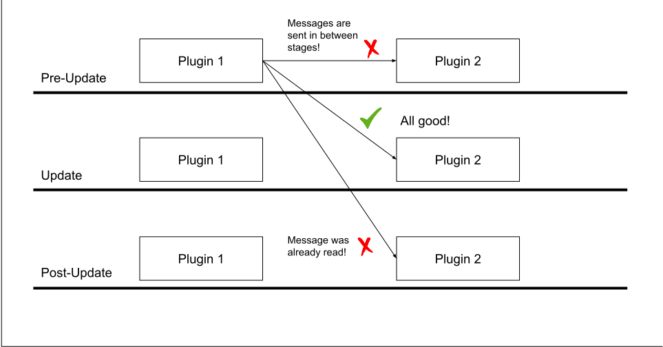
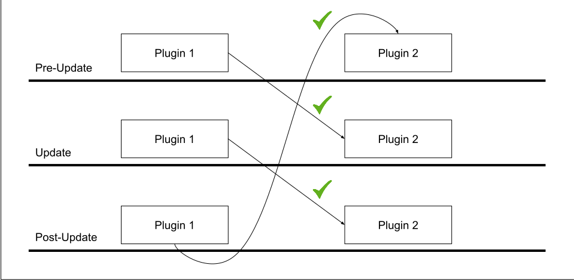

Pub/Sub channels
ChatImproVR uses the Publish-Subscribe pattern.
Receiving messages
Each System subscribes to a number of channels:
#![allow(unused)] fn main() { // Schedule the update() system to run every Update, // and allow it to receive the MyMessage message sched.add_system(Self::update) .stage(Stage::Update) .subscribe::<MyMessage>() .build(); }
Here we have subscribed to the MyMessage, which will be read every Update when update() is called.
We can read messages from within the system like so:
#![allow(unused)] fn main() { fn update(&mut self, io: &mut EngineIo, _query: &mut QueryResult) { // Dump the message to the console for msg in io.inbox::<MyMessage>() { dbg!(msg); } } }
Server-side, we can get some additional information per-message:
#![allow(unused)] fn main() { fn update(&mut self, io: &mut EngineIo, _query: &mut QueryResult) { // Dump both the message AND the client that sent the message to the console. // This is only relevant for servers! for (client, msg) in io.inbox_clients::<MyMessage>() { dbg!((client, msg)); } } }
Sending messages
Suppose MyMessage has the following type:
#![allow(unused)] fn main() { #[derive(Serialize, Deserialize, Debug)] struct MyMessage { a: i32, b: f32, } }
Note that we derive the
SerializeandDeserializetraits.
We can send the message using the io.send() function:
#![allow(unused)] fn main() { io.send(&MyMessage { a: 9001, b: 1337.0, }); }
Just as we can receive messages with their client IDs on the server, we can also send messages to specific client IDs from the server:
#![allow(unused)] fn main() { io.send_to_client(&msg, client.id); }
Here we might have obtained client.id from the Connections [message](TODO: LINK ME TO THE API DOCS!).
Defining message types
We need to give our message a universally unique name.
#![allow(unused)] fn main() { impl Message for MyMessage { const CHANNEL: ChannelIdStatic = ChannelIdStatic { // Here we define the universally unique name for this message. // Note that this macro simply concatenates the package name with the name you provide. // We could have written "channels_example/MyMessage" or even "jdasjdlfkjasdjfk" instead. // It's important to make sure your package name is UNIQUE if you use this macro. id: pkg_namespace!("MyMessage"), // Sent to server locality: Locality::Remote, }; } }
Note how we have specified the Locality of this message type. Local messages are sent to other plugins on this host. Remote messages are sent to the remote host. For example, a Remote message sent from a client would be received only at the server.
We can take a shortcut! The Message derive macro does this all automatically!
#![allow(unused)] fn main() { #[derive(Message, Serialize, Deserialize, Debug)] #[locality("Remote")] struct MyMessage { a: i32, b: f32, } }
Remote communication
All Remote messages are sent at the end of each frame.

See the channels example.
Local communication:
Messages are sent between stages, not within stages. Messages may only be received once: 
Messages may be sent and received each stage, even to the stage on the next frame: 
Messages are broadcasted to all subscribing plugins, including your own plugin:

Systems' order of execution is the same as the order in which they were declared: